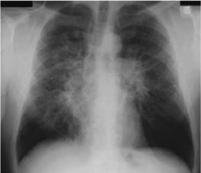

Mulher, de 55 anos, portadora de artrite reumatoide há vinte anos, com tratamento irregular, tem comparecido na unidade de saúde devido a edema persistente de membros inferiores há 6 meses. Os exames realizados têm mostrado uma proteinúria progressiva evidenciando lesão renal. Qual das afirmativas abaixo melhor explica o acometimento renal?
Paciente de 30 anos com artrite de tornozelos, eritema nodoso e adenopatia hilar. Qual é o diagnóstico mais provável?
Uma mulher de 57 anos apresenta tosse oligoprodutiva, com escarro claro, dispneia progressiva e perda de 6kg em 2 meses. Nega doenças atuais ou prévias conhecidas. É tabagista há 30 anos. O exame físico não revela anormalidades. Exames de laboratório: Hg: 11,2g/dL; LG: 7.540/mm³; plq: 219.000/mm³; Ca: 13,3mg/dL; albumina: 4,0g/dL; cr: 1,3mg/dL. Radiogra a do tórax: Biópsia de linfonodo mediastinal: granulomas epitelioides sem necrose, contendo células gigantes tipo Langhans. Não foram identi cados agentes infecciosos nas diversas colorações (Ziehl-Neelsen, PAS, metenamina de prata de Grocott). Considerando o caso descrito, assinale a alternativa que apresenta o diagnóstico MAIS PROVÁVEL para esse paciente.

Paciente do sexo masculino, de 44 anos, procura atendimento referindo tosse e dispneia, de início há 3 semanas, febre, perda ponderal, fotofobia, aumento do lacrimejamento e fadiga. Ao exame físico, apresenta eritema nodoso e nódulos subcutâneos. Exame oftalmológico evidenciou uveíte anterior. Radiogra a de tórax mostrou adenopatia hilar bilateral. Exames laboratoriais evidenciavam anemia, linfopenia, hipercalcemia. Biópsia de tecido pulmonar mostrou a presença de granuloma sem caseação. O diagnóstico mais provável é:
A síndrome de Löfgren, constituída por eritema nodoso, artrite de tornozelos e adenopatia hilar é característica de:
Todas as condições a seguir são características de envolvimento pulmonar na sarcoidose, exceto:
Uma paciente de 22 anos de idade, sem antecedentes de tabagismo, evolui há seis semanas, com piora de uma tosse seca e dispneia que não melhoraram após uso de antibioticoterapia e broncodilatadores. Apresenta nível sérico de cálcio de 12,5 mg\dl (VR: 8,0 mg\dl a 11,0 mg\dl), e os raios X de tórax mostram linfadenopatia peri-hilar bilateral. Apresenta eritema nodoso em pernas bilateralmente. Acerca desse caso clínico, assinale a alternativa que apresenta o diagnóstico mais provável dessa paciente.
Enferma, 42 anos, etnia negra, é admitida com quadro de eritema nodoso, linfadenopatia hilar bilateral à radiogra a de tórax e resposta negativa à prova de tuberculina. Tal quadro sugere, principalmente:
Mulher, 32 anos, afrodescendente, relata início há 6 semanas de tosse produtiva com escarro mucoso pouco volumoso e dispneia aos pequenos esforços que não melhoram com uso de antibióticos e antitussígenos. Seu nível sérico de cálcio é de 12 mg/dL, RX de Tórax mostra linfadenomegalias hilar bilateral. Qual o diagnóstico mais provável?
Paciente do sexo masculino, 44 anos de idade, pro ssão vigilante, admitido no Pronto Socorro com quadro de dispineia aos mínimos esforços, associado à tosse seca evoluindo para produtiva. Referia ainda fadiga e hiporexia com perda peso de 12 Kg. Antecedente de tabagismo com carga 20 anos/maço, abstinente há 4 anos. Ao exame, apresentou bom estado geral, acionótico, afebril, taquidispneico, corado, hidratado e linfoadenomegalias periféricas. PA: 120x60 mmHg, FC: 98 bpm, FR: 30 irpm. Aparelho respiratório com murmúrio vesicular diminuído difusamente, presença de estertores e sibilos esparsos. Na radiogra a de tórax, há in ltrado interstício-alveolar difuso com áreas de condensação em terços médios de ambos os pulmões , ausência de cavitações ou derrame pleural. Complementada com tomogra a de tórax que validou in ltrado interstício-alveolar bilateral com áreas de condensação em lobos médio e inferior de pulmão direto. Foi também realizada bronoscopia com biópsia que evidenciou granulomas não caseosos com células multinucleadas tipo Langerhans e Corpo Estranho central e tecido fibrótico ao redor do granuloma. Diante desse caso, qual o diagnóstico?
Tireoidite de Riedel, pancreatite autoimune, brose retroperitoneal (Doença de Ormond) e Síndrome de Mikulicz são atualmente consideradas entidades que compartilham aspectos anatomopatológico dos tecidos acometidos nessas entidades são esperadas as seguintes alterações, EXCETO:
Homem de 48 anos, sem história de tabagismo, relata tosse e dispneia nas ultimas 4 semanas, acompanhada de fadiga, febre e perda de peso. Apresenta elevação das enzimas hepáticas, de padrão colestático. Tomogra a de tórax evidencia adenopatia hilar bilateral e in ltrado pulmonar intersticial predominando nos lobos superiores. Realizada biópsia hepática, que evidencia granulomas não caseosos e pigmentos bilirrubinicos em hepatócitos. Qual o diagnóstico mais provável?
Sobre os achados laboratoriais na sarcoidose, é VERDADEIRO afirmar que:
Em uma mulher de 65 anos, a combinação de púrpura periorbitária bilateral, dispneia progressiva aos esforços e presença de dissociação massa-voltagem na análise conjunta da ecocardiogra a transtorácica bidimensional e do eletrocardiograma sugere o seguinte diagnóstico:
Assinale a opção condizente com as afirmações VERDADEIRAS acerca de amiloidose: I - Acometimento preferencial do rim, com lesão glomerular mais frequente que vascular e tubular, é o padrão observado na forma amiloide AA. II - A amiloidose secundária à artrite idiopática juvenil raramente acomete o rim. III - As formas primárias têm menor incidência que as amiloidoses hereditárias. IV - A presença de amiloidose no paciente com artrite reumatoide relaciona-se com mau controle clínico, acometimento extra-articular e positividade do fator reumatoide.
Paciente masculino jovem adulto, 42 anos, portador de doença granulomatosa multissistêmica, apresenta imagem radiológica de linfadenopatia hilar bilateral, com in ltração pulmonar. Ao exame físico, observam-se lesões cutâneas e oculares. Dentre as possibilidade diagnósticas abaixo, a MAIS COMPATÍVEL com o diagnóstico é:
Na suspeita de amiloidose, qual dos sinais ou sintomas clínicos pode ser considerado patognomônico?
Paciente masculino, 22 anos de idade, encontra-se em tratamento para acne conglobata. Recentemente refere cansaço com dores nas cartilagens costais, coluna cervical e sacroilíacas. Nega sintomas geniturinários e gastrointestinais. Informa que trocou de parceiro sexual recentemente. Os diagnósticos diferenciais pertinentes ao caso são:
Paciente do sexo masculino, 55 anos de idade, apresenta síndrome nefrótica associada a equimoses periorbitárias, distro a de unhas e macroglossia. Qual é a principal hipótese diagnóstica?
Todas as condições abaixo são características de envolvimento pulmonar na sarcoidose, exceto:
Paciente que apresenta eritema nodoso, adenopatia hilar bilateral e uveíte anterior sugere o diagnóstico de:
Mulher, 70 anos, com história de 4 meses de síndrome reumatoide com importante acometimento dos ombros. Recentemente com queixas sugestivas de polineuropatia periférica e síndrome do túnel do carpo. O exame físico mostra espessamento sinovial importante nos ombros e nos punhos, equimoses periorbitárias e macroglossia. Dos exames laboratoriais, o fator reumatoide negativo e elevação da creatinina. O diagnóstico mais provável é:
A associação de febre, artralgias, eritema nodoso e linfonodomegalia hilar bilateral caracteriza uma forma aguda bem definida da sarcoidose, que é conhecida como doença de:
NÃO faz parte dos achados clínicos da amiloidose secundária:
Qual é o principal sistema afetado pela Sarcoidose?
Mulher, 39 anos, apresenta insu ciência renal e hipercalcemia. Ultrassonogra a abdominal: litíase renal bilateral não obstrutiva; RX de tórax: alargamento de mediastino; anatomopatológico de biópsia renal percutânea: glomérulos normais, interstício comprometido com grande número de leucócitos e granuloma não caseoso. Este resultado pode ser compatível com nefropatia por:
Doença sistêmica, que caracteriza-se por granulomas não caseosos nos pulmões e em outros órgãos, podendo ser acompanhada de uveíte, lesões cutâneas, paralisia de Bell, poliartrite, arritmias cardíacas e distúrbio de condução. Estamos falando de:
Mulher de 47 anos, negra, em exame periódico apresenta em sua radiogra a de tórax massas hilares bilaterais. A biópsia de uma dessas massas mostra granuloma não caseoso e as colorações para fungo e Bacilos Álcool-Ácido Resistente foram negativas. Qual é o diagnóstico mais provável para o caso?
Qual dos achados abaixo NÃO é típico da sarcoidose?
Assinale a assertiva CORRETA em relação à sarcoidose:
Paciente feminina de 50 anos encontra-se em terapia substitutiva renal (diálise) devido à insu ciência renal e proteinúria nefrótica. Ultimamente vem se queixando de macroglossia, parestesia em mãos em trajeto de nervo mediano, dor e aumento de volume abdominal em hipocôndrio direito. Exames complementares demonstram aumento importante de fosfatase alcalina, níveis de transaminases normais, hipoalbuminemia e hipergamaglobulinemia monoclonal, além de exame de imagem confirmando hepatomegalia. Qual o diagnóstico mais provável?
Mulher de 55 anos com púrpura periorbital, insu ciência renal, neuropatia periférica e anasarca. Seu exame físico revela estase de veia jugular importante a 45 graus, presença de B3 de Ventrículo Direito (VD) e impulso apical normal. Qual a hipótese diagnóstica mais provável?
A associação de febre, artralgias, eritema nodoso e linfonodomegalia hilar bilateral caracteriza uma forma aguda bem definida da sarcoidose, que é conhecida como:
A confirmação histopatológica de uma hipótese diagnóstica de amiloidose sistêmica pode ser dada por meio de biópsias preferencialmente de tecidos:
A sarcoidose é uma doença sistêmica de etiologia desconhecida. Com respeito à sarcoidose, verifica-se que:
Mulher, 29 anos, preta, assintomática, apresenta, em radiograma de tórax realizado para admissão no trabalho, linfoadenomegalias nas regiões hilares e paratraqueais, bilateralmente. Hemograma normal. Mantoux não reator. Ao exame físico, não apresenta linfonodos palpáveis. Qual é a principal suspeita diagnóstica?
Paciente de 30 anos, com história súbita de febre, fadiga, anorexia, perda de peso, dispneia, poliartralgia, lacrimejamento e fotofobia. O exame físico mostra placas e nódulos profundos e dolorosos à palpação em membros inferiores, linfoadenomegalias cervical, axilares e inguinais. A dosagem de ECA está elevada. Seu RX de tórax revela adenopatia hilar bilateral. A suspeita diagnóstica é de:
Em um paciente com eritema nodoso, a presença de linfadenopatia hilar bilateral e uma resposta negativa ao PPD sugere o diagnóstico de:
O caso clínico de um indivíduo de 57 anos com hepatoesplenomegalia foi levado à reunião semanal da gastroenterologia. Após ampla discussão, foi prorposta pesquisa de amiloidose sitêmica secundária. Um fragmento de tecido, corado pelo vermelo-do-congo e examinado sob microscopia óptica polarizada, mostrou a típica birrefringência verde- maça e, assim, confirmou-se a suspeita inicial. No que tange à sensibilidade deste método, ela é menor para amostras teciduais obtidas por biópsia de:
Mulher de 40 anos apresenta eritema nodoso nos membros inferiores e artrite de tornozelos com edema periarticular exuberante com evolução com 6 semanas. Traz radiograma de tórax com adenopatia hilar bilateral. Com base nos dados clínicos fornecidos, que exame complementar seria útil para definir a etiologia da artrite? Respostas: 1 12 23 34